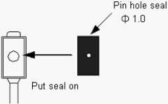
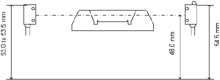
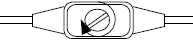
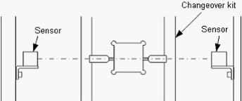
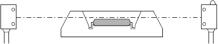
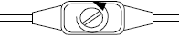
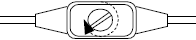
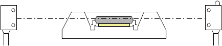
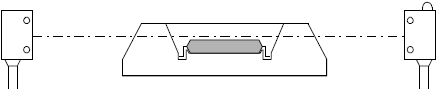
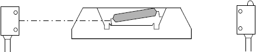

A2-2 How to adjust about device floating sensor of Input shuttle ( 2 )
Photoelectric sensor adjustment for NS-6000 ( with sensor sensitivity adjuster )
Shuttle IC Floating Sensor Adjustment (with the adjuster)
1. Preparation Remove the seal on the light receiving side photoelectric sensor and put the seal with the pin hole Φ 1.0. * Detection is available without changing the seal, however, for small thin devices, it is easier to adjust the sensor and also the precision is stabilized with the pin hole seal.

2. Adjust the height of the sensor. Set the center of the light receiving side sensor at the 48.0 mm from the base surface (54.5 mm to the sensor top surface).

3. Move the Index Shuttle 1 and 2 to the Loading side. P21, P22
4. Mount the changeover kit on the shuttle.
5. Turn the adjuster to the right until it stops and confirm that the green lamp is ON.

* If the green lamp is OFF, the light axis may be misaligned. Adjust the sensor position.

6. Place the device in the jig pocket.

7. Turn the adjuster to the left until it stops. (Red and Green lamps are ON)

8. Gradually turn the adjuster to the right and stop when the lamp status changes from red and green are OFF to only green is ON.

9. Place a spacer (a plain washer, etc.) below the device to raise the device from the pocket by 0.5 to 0.7 mm. At this point, confirm that the red and green lamps are ON.

If not both red and green lamps are ON, start again from the step 6 to step 9.
10. Place the device in the shuttle pocket and confirm the sensor light can pass through. (Green lamp is ON)

11 Raise the device from the pocket and confirm that the sensor light is blocked. (Red and Green lamps are ON) Change the device position and check the sensor light.
